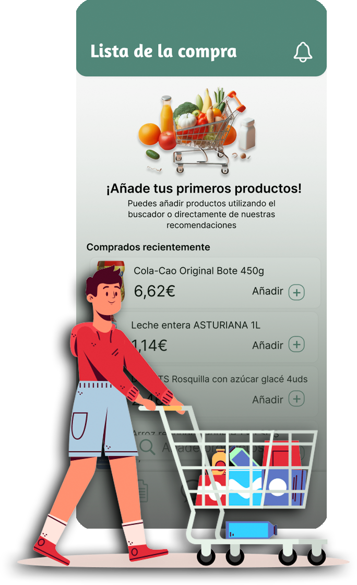

Lista de la compra


M4RKET es un aplicación movil creada por los integrantes de 4AM. La idea surge como una solución a la perdida de tiempo en los supermercados a la hora de realizar la compra y la mala experiencia de los usuarios para localizar ciertos productos.
Para ello hemos creado un sistema de localización de productos que falicitará al usuario encontrar los producots y por lo tanto, reducirá el tiempo que los trabajadores de las grandes superficies pierden en la atención al público, dando como resultado una eficacia mayor a la hora de realizar sus funciones principales. Otras funciones de la aplicación son:
Lista de la compra

Ruta en mapa 3D
Asistente virtual
Nuestra aplicación ofrece unas ventajas que las hacen destacar del resto de apps del mercado, tanto como si eres un comercio interesado en contactar nuestros servicios o como si eres un usuario interesado en probar los beneficio de la aplicación
Como comercio
Como usuario
M4RKET tiene un funcionamiento muy sencillo e intuitivo para que todo tipo de usuarios puedan accedere y hacer uso de la aplicación, ya sean usuarios con conocimientos tecnológicos como usarios que no.
Para la gente que tenga alguna duda o quiera consultar más información sobre nuestra app y su temática, puede acceder a nuestro objeto de aprendizaje para nutrirse de conocimiento